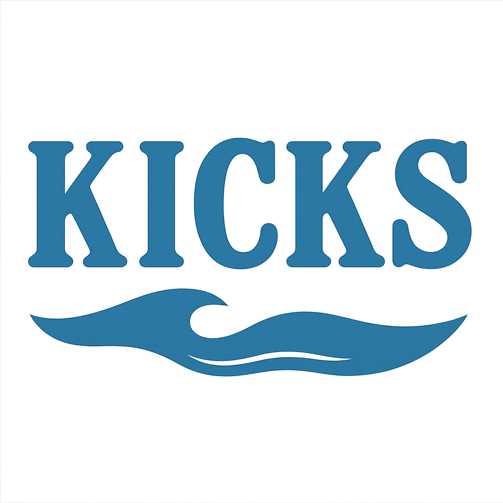
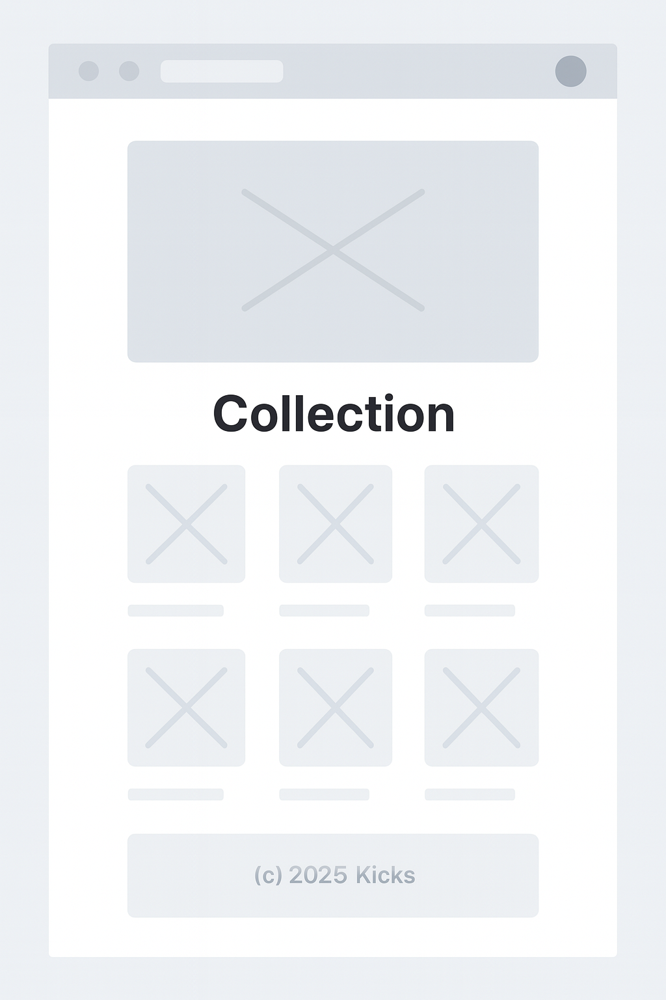
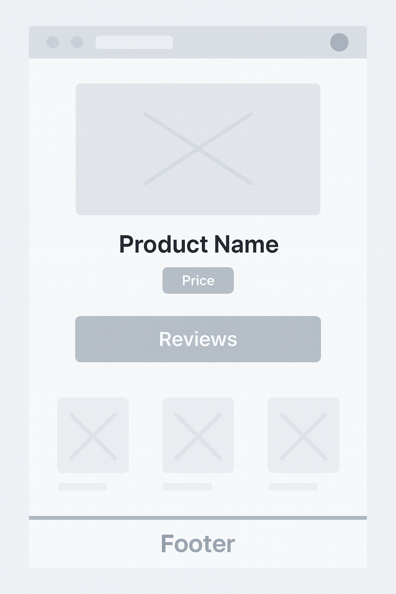

Purpose & Audience
The Kicks Collection site is designed to showcase and sell modern, California-inspired sneakers. The site targets sneaker enthusiasts, fashion-forward shoppers, and anyone interested in unique, comfortable footwear. The goal is to provide an engaging, visually appealing, and easy-to-navigate experience for users to explore and purchase sneakers.
Dynamic Elements
- Product cards are rendered dynamically from a JavaScript array of sneaker objects (see
kicks.js). - Responsive navigation menu with a hamburger toggle for mobile (see
menu-togglein HTML/CSS). - Animated hero section with a typing effect (see
hero-typinginkicks.js). - Cart icon updates and event handling for adding/removing items (see
cartIconandcartCount). - Conditional rendering for featured/new arrival products.
- DOM interaction: selecting, modifying, and reacting to events (e.g., menu, cart, product cards).
- Use of objects, arrays, and array methods (forEach, map, filter, etc.).
Logo
The logo is a stylized blue sneaker silhouette with a palm tree, representing the California theme. (Located at assets/imgs/kickstansparent.png)
Colors & Fonts
- Primary Blue: #1976d2 (var(--primary-blue))
- Accent Blue: #2563eb (var(--accent-blue))
- Accent Orange: #f57c00 (var(--accent-orange))
- Background: #f7fafd (var(--bg-dark)), gradient:
linear-gradient(120deg, #e0e7ff 60%, #2563eb 100%) - Text: #222e3a (var(--text-light)), #222 (var(--gray-dark))
- Fonts: 'Outfit', 'Montserrat', Arial, sans-serif (main); 'Bebas Neue', 'Montserrat', cursive, sans-serif (logo)
Content
- Home page: Hero section, featured product, shop section with product cards, about section.
- Product data: Name, description, price, and images for each sneaker (see
kicks.jsandkicks/imgs/). - Child page: Individual product details (e.g.,
shoe.html) or a blog about sneaker culture. - Images: Product images, logo, and icons (see
kicks/imgs/).
Wireframes
Home Page:
Child Page:
